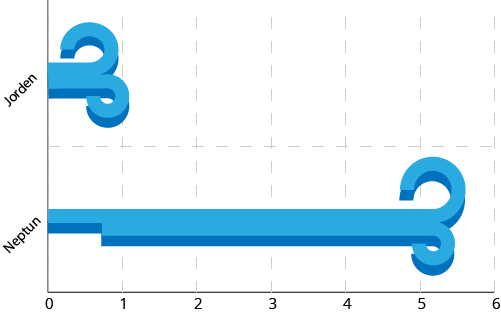

Neptun

Fakta om Neptun:
Neptun år:
1 år på Neptun svarer til 165 år her på Jorden (den tid det tager at flyve rundt komm solen).
Neptun døgn:
1 døgn på Neptun varer 16 timer, dvs tiden det tager planeten at snurre rundt om sig selv.
Placering:
Neptun er den ottende planet fra solen. Afstanden fra Neptun til solen er ca. 4,5 billioner km. Det er omkring 30 gange afstanden fra Jorden til solen.
Stormene på Neptun:

På Neptun kan vinden blæse 5 - 6 gange stærkere end på jorden. I 1989 spottede rumsonden Voyager 2 en storm der blæste med næsten 2.400 km/t.Stormen var stor nok til at kunne rumme hele Jorden.
Navnet Neptun har sin oprindelse i den romerske mytologi, hvor Neptun var gud for ferskvandet og havet.
Neptun er den fjerneste planet i solsystemet: den er en af de to iskæmper sammen med Uranus, og en af de 4 Gaskæmper sammen med upiter, Saturn, Uranus og Neptun.
Pluto var engang den fjerneste planet, men i 2006 besluttede man at pluto ikke var en planet.